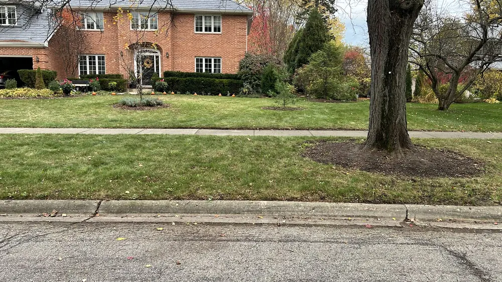
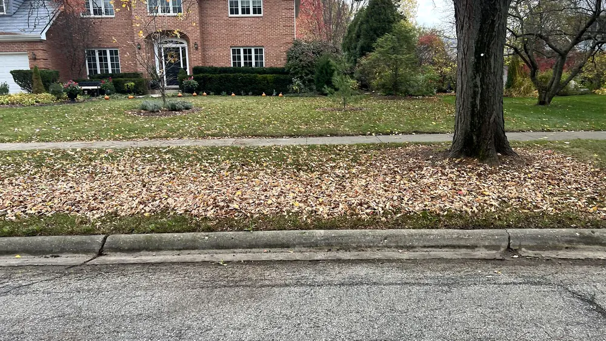
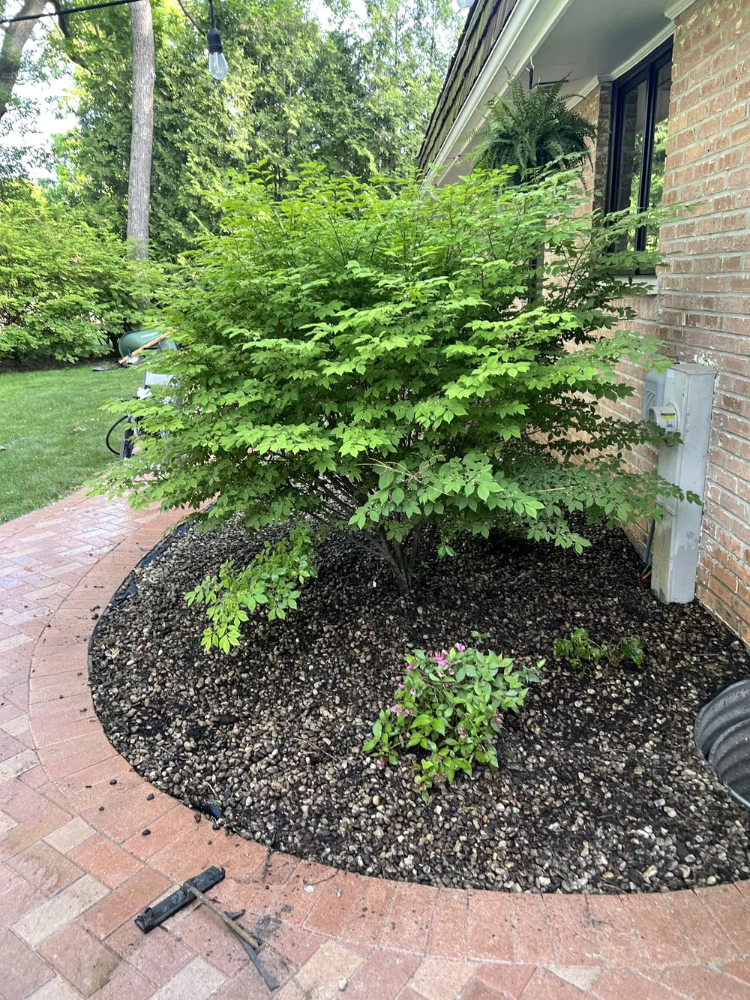
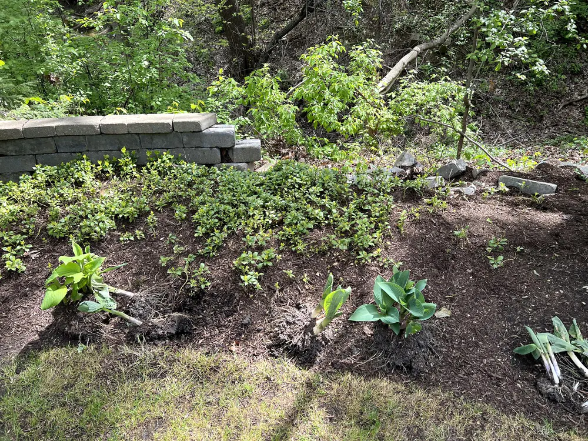
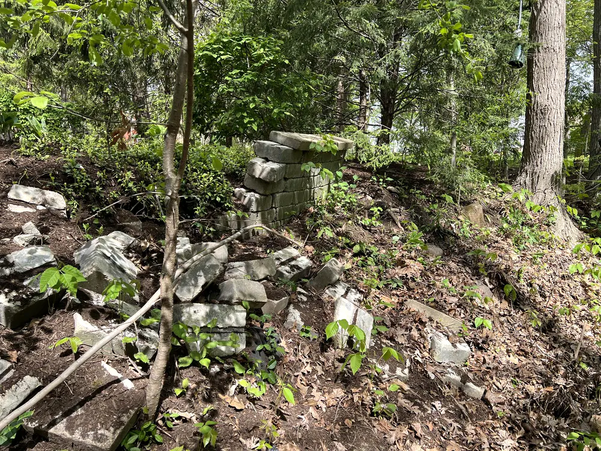
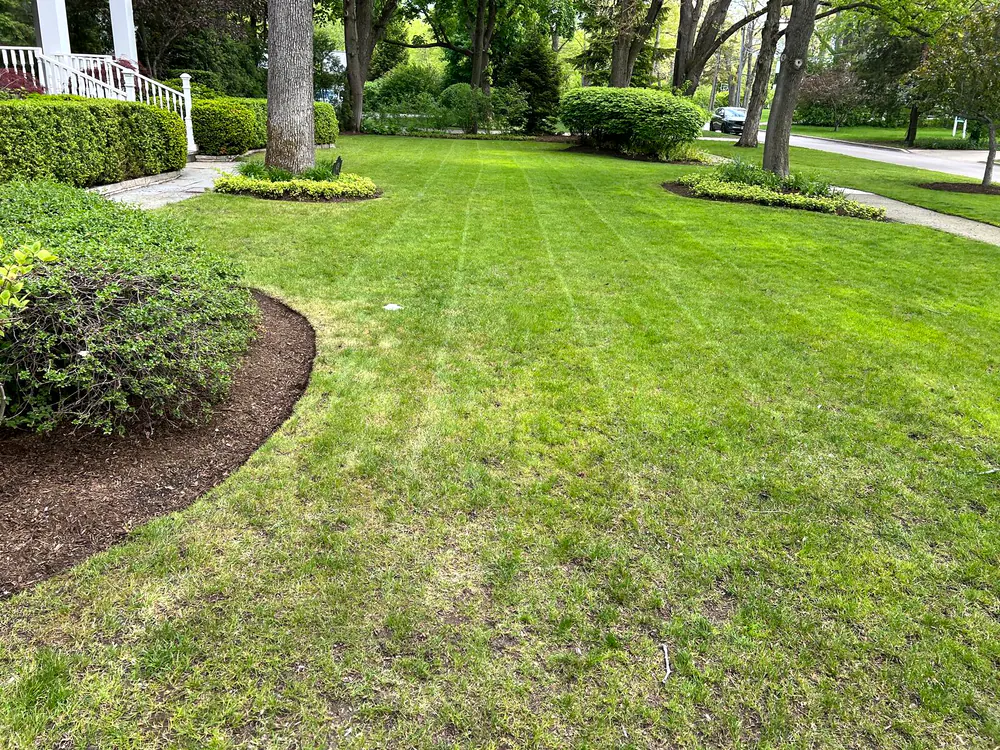
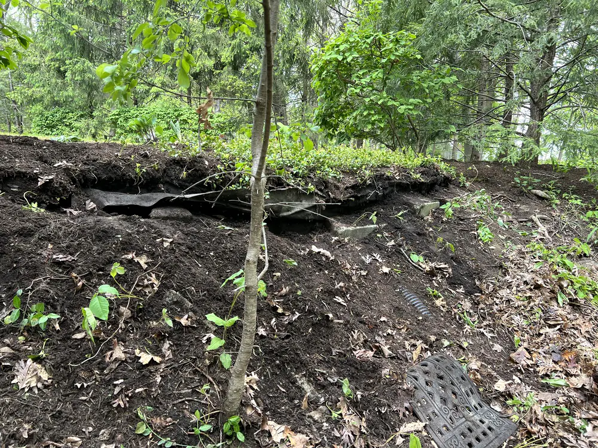
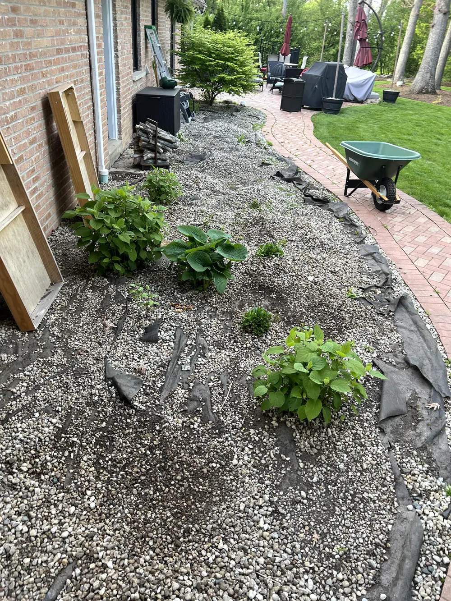
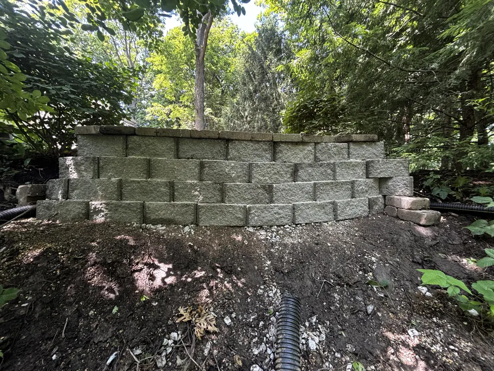

Real projects.
Local care.
A closer look at the lawns, cleanups and landscape projects behind our work. Browse by service, then open any photo to see the full picture.

Built into the landscape.
A closer view of the completed retaining wall and its finished courses.


A clear parkway.
The lawn and parkway after leaf collection and removal.

The everyday details.
A residential lawn from our local lawn-care work.


Before the cleanup.
The same property with fallen leaves covering the parkway before work began.


Room to grow.
Established plants in a finished landscape bed.


The starting point.
The existing wall before the retaining-wall rebuild.


Making way for the rebuild.
Removal work exposes the slope behind the old wall.


Care across the property.
Another view of our residential lawn-care work.


Below the finished surface.
The excavated area during preparation for the new wall.


A closer look at the planting.
Young plants and the bed edge beside a brick patio.


The complete view.
The finished wall in the context of the surrounding property.
What does your property need?
Tell us about your project and location. We'll discuss the scope and confirm availability before booking.